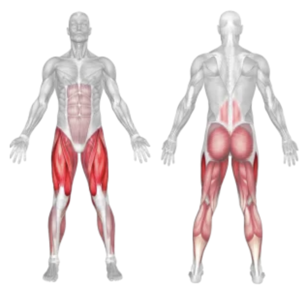
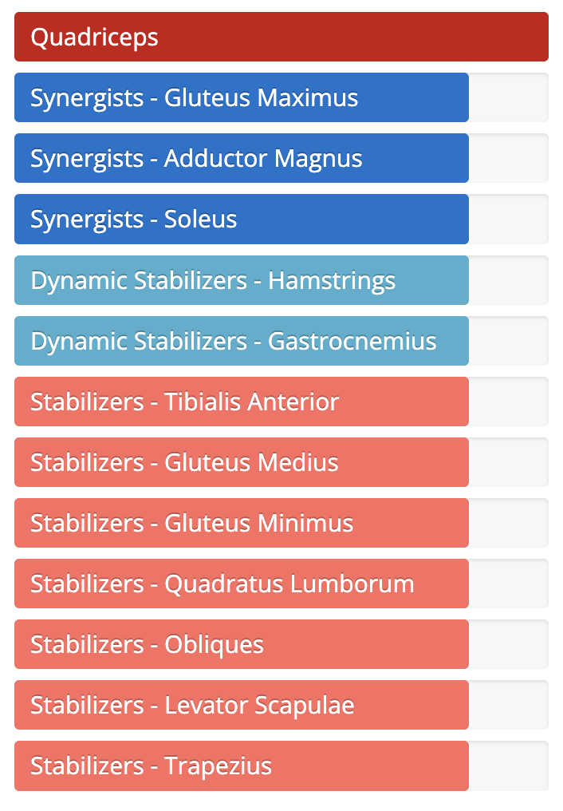

Setup
- Stand tall with your feet shoulder-width apart, holding dumbbells by your sides (optional).
- Engage your core and maintain a straight posture.
- Look forward and keep your chest lifted throughout the movement.
Execution
- Step Forward: Take a big step forward with your right foot, lowering your hips until both knees are at 90 degrees.
- Drop the Back Knee: Your left knee should nearly touch the floor, and your right thigh should be parallel to the ground.
- Push and Step: Push through your right heel to stand and bring your left foot forward into the next lunge.
- Continue alternating legs as you "walk" forward.
Tips for Effectiveness
- Keep Torso Upright: Don’t lean forward; maintain a strong, vertical posture.
- Controlled Movements: Avoid rushing — step slowly and deliberately.
- Engage Core: Activate your core throughout to protect your lower back.
- Use Dumbbells: For added resistance and balance challenge.
Benefits of Walking Lunges
- Strengthens Lower Body: Builds glutes, hamstrings, quads, and calves.
- Improves Balance and Coordination: Each step challenges stability and core control.
- Functional Movement: Mimics real-life walking mechanics with resistance.
- Unilateral Training: Helps correct muscle imbalances between legs.
Muscles Worked in Walking Lunges

